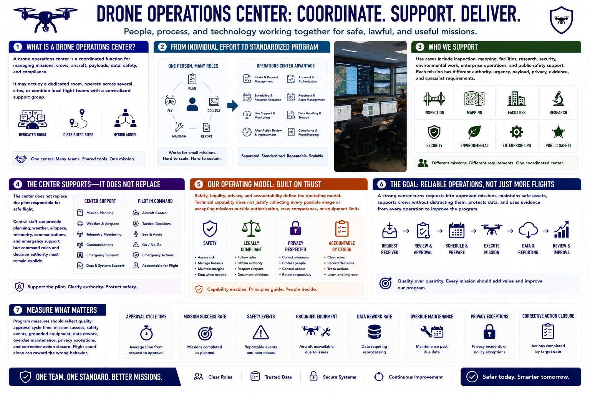

What Is a Drone Operations Center?
Connecting to LMS... Progress: in progress

Narration
A drone operations center is a coordinated function for managing missions, crews, aircraft, payloads, data, safety, and compliance. It may occupy a dedicated room, operate across several sites, or combine local flight teams with a centralized support group.
A single pilot may plan, fly, collect, maintain, and report one small mission. A center separates and standardizes those responsibilities across a program. It creates repeatable intake, approval, scheduling, readiness, live support, data handling, and review.
Use cases include inspection, mapping, facilities, research, security, environmental work, enterprise operations, and public-safety support. Each mission has different authority, urgency, payload, privacy, evidence, and specialist requirements.
The center does not replace the pilot responsible for safe flight. Central staff can provide planning, weather, airspace, telemetry, communications, and emergency support, but command roles and decision authority must remain explicit.
Safety, legality, privacy, and accountability define the operating model. Technical capability does not justify collecting every possible image or accepting missions outside authorization, crew competence, or equipment limits.
The goal is reliable operations, not simply more flights. A strong center turns requests into approved missions, maintains safe assets, supports crews without distracting them, protects data, and uses evidence from every operation to improve the program.
Program measures should reflect quality: approval cycle time, mission success, safety events, grounded equipment, data rework, overdue maintenance, privacy exceptions, and corrective-action closure. Flight count alone can reward the wrong behavior.